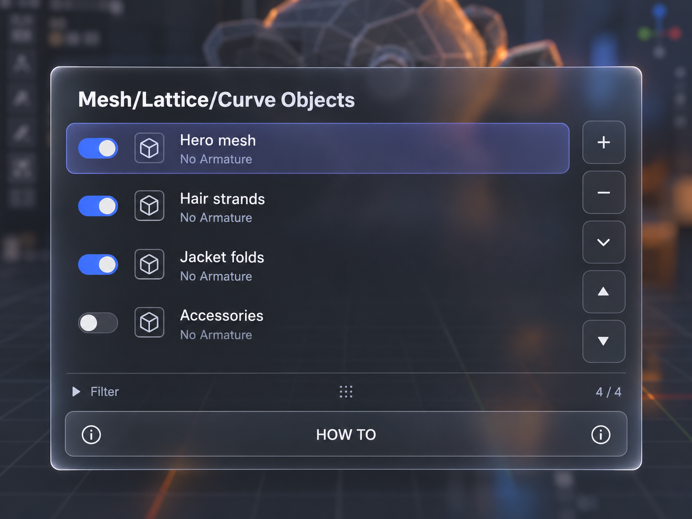
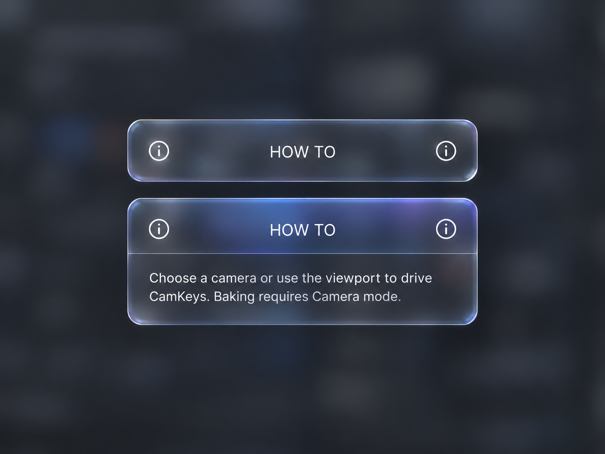
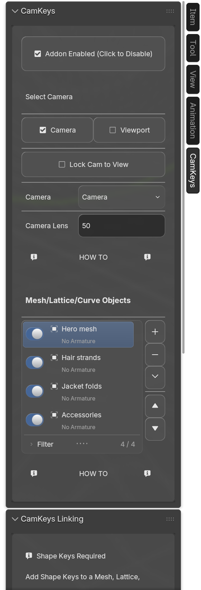
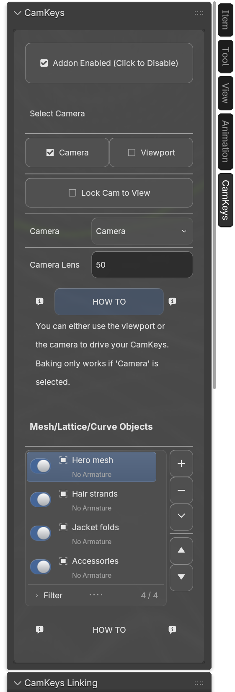
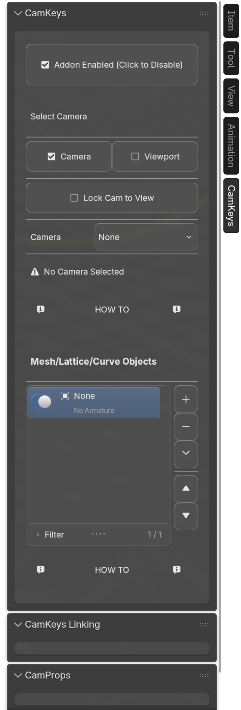
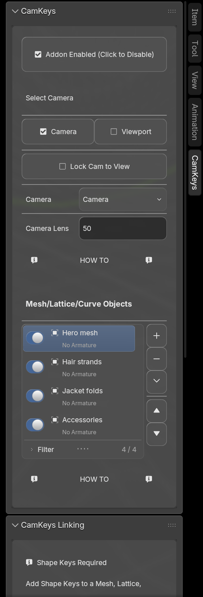

Generated list reference

The fixes are shared library behavior: compact name/status columns, centered unembossed Boolean buttons, author alignment, and one centered glyph on icon-only menus. Ordinary Boolean fields remain BVT switches. The native font queue is drained before custom framebuffer work, and owned text is submitted inside its control transform. Actual expand/collapse captures retain every checked label with glass enabled.
Exact reference matching is still open. The generated concepts differ in original Blender icon shapes, glass rim/background and help-card composition. These differences are recorded, not counted as visual acceptance. Original consumer wording and the authored four-row minimum are retained.







Recorded states, not an animation-speed demonstration.

284 unit tests, Boolean input/context checks on 5.1.2/5.2.2, actual embedded captures with original glass enabled. Headers and unchanged text retain their ink after expansion; absolute OCR checks also require all ten named labels in idle, expanded and collapsed captures. Tests, focus audit, timing, reference differences and source hashes · Overview and estimate · Previous implementation